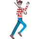
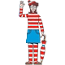

Let's go! Find Wally
Game Start!
Replay❓
X
⏱ 월리를 찾아라!
💡 이미지와 같은 2명의 월리를 찾으세요!
💡 이미지와 다른 모습의 월리를 찾거나 월리의 여자친구를 찾을시 게임은 종료됩니다.

💡 월리를 모두 찾을 시 다음 단계로 넘어갈 수 있습니다.
💡 타임아웃 그리고 잘못된 선택을 했을 시 게임은 초기화 됩니다.
00:00
Level 1
2